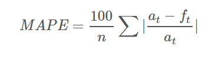
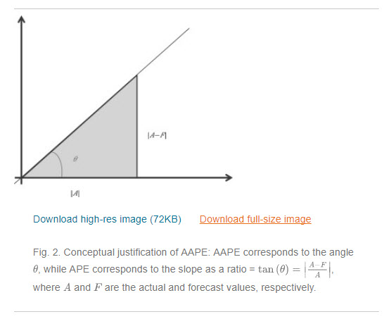

8 Building your own petroleum engineering library with R: zFactor v0.1.7
8.1 CRAN and Github
I just released last night a new version of zFactor: v0.1.7. As of this morning, the package has been accepted by CRAN, the Comprehensive R Network Archive. All the code, notes, datasets, notebooks, documentation is publicly available via GitHub at this link.
The zFactor R package also includes its own website: https://f0nzie.github.io/zFactor/
That is one of the neat things about R: the code and documentation that you write for your package can also be used for automatically generating a website in GitHub. I used pkgdown, another R package developed by the tireless genius of data science Hadley Wickham.
8.2 New features
There are some new things in zFactor v0.1.7:
A new correlation by I. Papp which was graciously provided by William Donovan in SPEConnect. Papp’s is one of the few z factor correlations that is explicit; it doesn’t require to perform loop iterations like in the implicit correlations Hall-Yarborough, Dranchuk-AbouKassem, Dranchuk-Purvis-Robinson, etc. I couldn’t find the original paper by Papp in English. It was released in 1979. Please, if you find the paper, I would appreciate if you share it with me. I found documentation though on the correlation in papers and books. See the references and bibliography at the zFactor website. This is the for the Papp correlation code:
.z.Papp <- function(pres.pr, temp.pr, tolerance = 1e-13, verbose = FALSE) {
# core function
# Papp compressibility factor
x <- pres.pr / temp.pr^2
a <- 0.1219 * temp.pr^0.638
b <- temp.pr - 7.76 + 14.75 / temp.pr
c <- 0.3 * x + 0.441 * x^2
z <- 1 + a * (x - b) * (1 - exp(-c))
return(z)
}Very simple, isn’t it?
8.3 MAPE
Comparatively, the correlation looks fairly acceptable if you are in a hurry and need a quick calculation. Below, you can see the Mean Absolute Percentage Error (MAPE) plot for Papp. It shows similar weaknesses at the isotherms 1.05 and 1.1 with a spot clearly with 25% error and few others at more than 25% (gray areas). You will able to see more statistical comparisons, such as the Root Mean Square Error (RMSE), in the package website itself.
knitr::include_graphics("./images/papp_mape.png")
8.4 RMSE
There are two vignettes or R documentation pages devoted to statistical comparison: (1) selecting the correlation; and (2) measuring errors in calculating z. You will see functions and plots that were used while trying to select the most accurate correlation. Below I am showing the RMSE for all the correlations under study. You may find that only an error measure could not be enough to qualify a particular correlation.

This is where data science tools come in pretty handy. Plotting makes things clearer if one measure is not enough. Let’s take for instance the RMSE heatmap plot for Papp. If MAPE measure was not enough RMSE could give a better hint:

and compare it against Dranchuk-AbouKassem (DAK), one of the most stable and used in the industry:

8.5 MAAPE
Another new thing in zFactor is the addition of a new statistical error measure: the Mean Arc-tangent Absolute Error or MAAPE. It is a very interesting measure because of two reasons: it is based on the Mean Absolute Percentage Error (easy to understand), it doesn’t depend on the scale and fixes the problem with small numbers, especially, when they tend to zero because of the term for the actual or current values in the denominator.

In fact, the author of the paper “A new metric of absolute percentage error for intermittent demand forecasts” used some geometry analogy to show that if we take the numerator and denominator of MAPE and put it in a triangle rectangle like so:

then, instead of MAPE being the slope, we could come up with MAAPE where the angle theta is the arc tangent of MAPE elements. The solution is pretty neat since instead of getting from MAPE infinite as an answer, we get pi/2, when the denominator tends to zero.
8.6 The zFactor website
There are other new feature in zFactor such as the ability of the package of functioning as a website, functions have been improved to allow more statistical measures such as RMSE and the new MAAPE. Finally, I was able to find the paper “Comparing Methods for Calculating z Factor” by Professor Gabor Takacs, which is always referred as a source when dealing with correlations for the compressibility factor. The link is also available in the zFactor website.